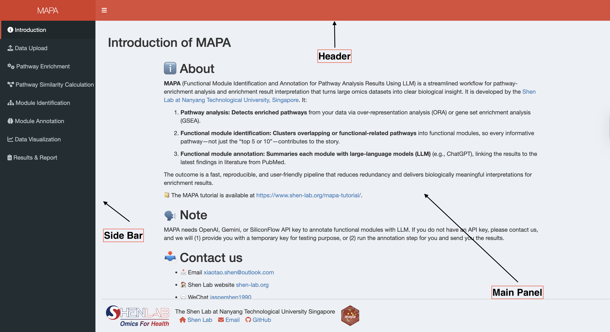
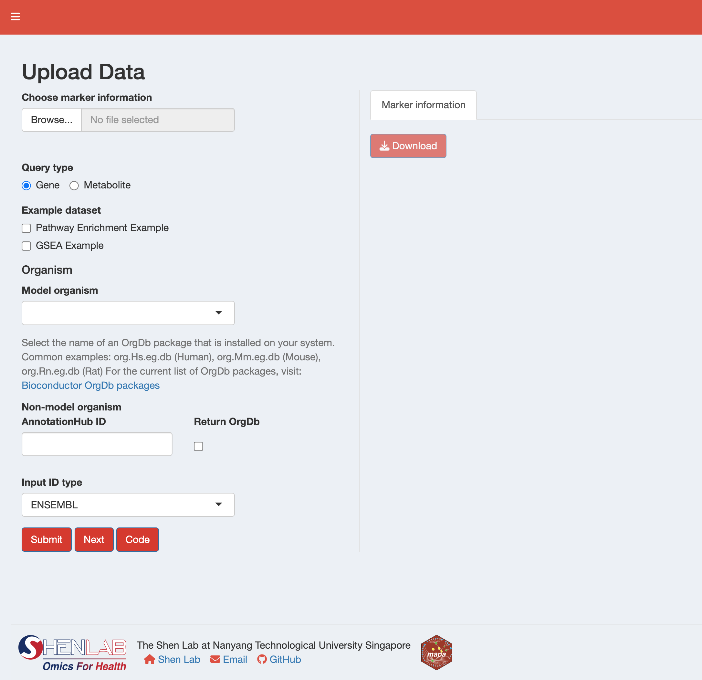
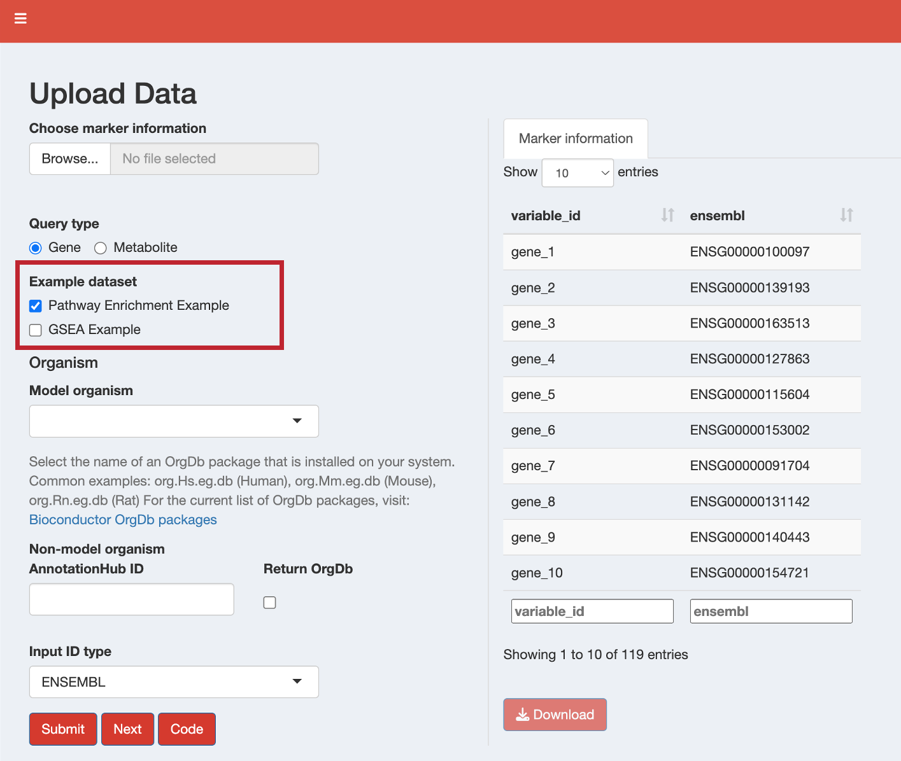

library(mapashiny)
run_app()10 Data Input and Preprocessing
This chapter covers how to input and preprocess your data using the mapa Shiny application. The Shiny app provides an intuitive interface for uploading data and performing ID conversion, which is essential for downstream pathway analysis.
10.1 Launching the mapa Shiny App
Before you can input and process your data, you need to launch the mapa Shiny application.
Important
Prerequisites: Ensure you have installed both the mapa package and mapashiny package as described in Chapter 9.
To launch the mapa Shiny app, run the following command in your R console:
Once launched, you’ll see the mapa interface with:
- Header: Application title and navigation
- Sidebar: Menu with different analysis steps
- Main Panel: Content area for each analysis step

The sidebar contains the following sections:
- Introduction: Overview of mapa functionality
- Upload Data: File upload and ID conversion (covered in this chapter)
- Enrich Pathways: Pathway enrichment analysis
- Pathway Clustering: Two methods for grouping related pathways
- LLM Interpretation: AI-powered functional module annotation
- Data Visualization: Results plotting and visualization
- Results & Report: Final results and report generation
10.2 Accessing the Upload Data Interface
After launching the mapa Shiny app, navigate to the Upload Data tab in the sidebar. The interface is divided into two main sections:
- Left Panel: File upload, data type selection, and processing parameters
- Right Panel: Data preview and download options

10.3 Input Data Requirements
The Shiny app accepts CSV files (.csv) and Excel files (.xlsx, .xls). For more details and examples, see Section 2.1.
For Over-Representation Analysis (ORA), your data must contain one of the following identifier columns (column names must be lowercase):
ensembl: Ensembl gene IDs (e.g., “ENSG00000141510”)entrezid: NCBI Entrez gene IDs (e.g., “7157”)uniprot: UniProtKB accession numbers (e.g., “P04637”)symbol: Gene symbols (e.g., “TP53”)
For Gene Set Enrichment Analysis (GSEA), you need:
- One identifier column (ensembl, entrezid, uniprot, or symbol)
- An
order_bycolumn containing numeric values to rank genes (This is used to create the ranked gene list required for GSEA. Common choices like Log2 fold change values, pvalue)
For metabolite analysis, your data must contain one of the following identifier columns:
hmdbid: Human Metabolome Database IDs (e.g., “HMDB0000001”) - Human onlykeggid: KEGG Compound IDs (e.g., “C00001”) - All organisms
10.4 Step-by-Step Guide
10.4.1 Step 1: Select Query Type
First, choose your data type using the radio buttons:
- Gene: For gene expression or proteomic data
- Metabolite: For metabolomic data
10.4.2 Step 2: Load Your Data
You have two options for loading data:
- Click “Browse” to upload your file
- Select a CSV or Excel file from your computer
- The data will be automatically loaded and displayed in the preview table
For quick testing, select from the available example datasets:
Gene Examples:
- Pathway Enrichment Example: Sample data for Over-Representation Analysis (ORA)
- GSEA Example: Sample data with fold change values for Gene Set Enrichment Analysis
Metabolite Examples:
- Pathway Enrichment Example: Sample metabolite data for pathway analysis

10.4.3 Step 3: Configure ID Conversion Parameters
10.4.3.1 For Gene Data
If working with common model organisms:
Select Organism: Choose from the dropdown menu for standard organism database Bioconductor packages.
NoteFor most model organisms, Bioconductor already supplies curated organism annotation databases (the OrgDb packages). You can browse the complete list and select the one that matches your species of interest here.
Input ID Type: Select the identifier type in your data
For organisms without standard Bioconductor packages:
- AnnotationHub ID: Enter the AnnotationHub identifier (e.g., “AH119900”)
- Return OrgDb: Check this box to return the organism database for downstream analysis
- Input ID Type: Select your input identifier type
Tip
Finding AnnotationHub IDs:
To find the correct AnnotationHub ID for your organism:
library(AnnotationHub)
ah <- AnnotationHub()
# Search by taxonomy ID (e.g., 9541 for Macaca fascicularis)
query_result <- AnnotationHub::query(ah, c("OrgDb", "9541"))
query_result$ah_id10.4.3.2 For Metabolite Data
- Organism: Select from KEGG organism codes
- Input ID Type: Choose the identifier type in your data: KEGG ID (available for all organisms), HMDB ID (human only)
10.4.4 Step 4: Process Your Data
- Click the “Submit” button to start ID conversion
- The app will validate your inputs and perform the conversion
- Success or error messages will appear as notifications
- Processed data will be displayed in the preview table
10.4.5 Step 5: Review and Download Results
After successful processing:
- Preview: Review the converted data in the “Marker information” tab
- Download: Click the “Download” button to save the processed data as a CSV file
- View Code: Click the “Code” button to see the R code that replicates your conversion
10.5 Understanding the Results
After ID conversion, your data will contain all necessary identifier columns:
For Genes:
- Original columns from your input data
ensembl: Ensembl gene IDsentrezid: NCBI Entrez gene IDs
uniprot: UniProtKB accession numberssymbol: Gene symbols
Note
Blank columns might appear for some identifier types after ID conversion. Because some annotation databases may not provide all four identifier types (ensembl, entrezid, uniprot, symbol). mapa will generate blank columns for unavailable ID types. Do NOT delete these blank columns as they are required for the downstream workflow to function correctly.
For Metabolites:
- Original columns from your input data
hmdbid: HMDB IDs (human only)keggid: KEGG compound IDs
10.6 Troubleshooting Common Issues
File Upload Problems
Issue: “Unsupported file format” error
Solution: Ensure your file is in CSV (.csv) or Excel (.xlsx, .xls) format
ID Conversion Errors
Issue: “Invalid OrgDb package name” error
Solution: Ensure the organism package name follows the format
org.XX.eg.dbIssue: “Package not installed” error
Solution: Install the required Bioconductor package:
BiocManager::install('org.Hs.eg.db') # Example for humanIssue: High percentage of failed ID mappings
Solution:
- Verify your input ID type selection matches your data
- Check for typos or formatting issues in your identifiers
- Some ID loss is normal during conversion
Non-Model Organism Issues
Issue: AnnotationHub ID not found
Solution:
- Verify the AnnotationHub ID is correct
- Check internet connection for AnnotationHub access
- Use the search method provided in the tip above
10.7 Next Steps
Once your data is successfully processed:
- Click the “Next” button to proceed to Enrich Pathways
- Or navigate manually to the Enrich Pathways tab in the sidebar
The processed data will automatically be available for pathway enrichment analysis in the next step.
Important
Before Proceeding: Ensure your data conversion was successful and all necessary identifier columns are present. The enrichment analysis requires properly formatted identifier information to function correctly.